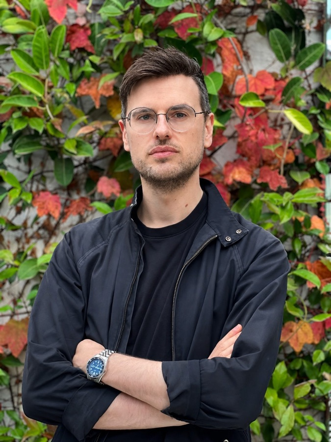

Your family’s stories, made into short films.
Short films about the people, places, and things that matter most to your children in their own lives. Made from your family’s photos and videos.
I work with you to make choosing easy and fun, and bring it all together into short films your children will want to return to, again and again.
Tell me about your familyYear one
Grandma’s garden
Our street
The strawberry farm
Choose a film
Thinking about Christmas? Tell me what you have in mind and we’ll discuss what’s possible.
When it’s time for a screen, what’s the best thing a child could be watching?
Screen time is a big issue for young families. I’m interested in the question: what are the most nourishing things for children to watch?
For me, that’s the photos and videos of the people, places, and things that matter most to them in their own lives.
Why family stories are worth keeping →Choose the moments you love.
Most of us take thousands of photos and videos. The biggest barrier to turning them into finished films is choosing what to include. It can be overwhelming and it takes forever.
I’ve built a process where I work with you to make choosing easy and fun. I bring together the stories, messages and recordings that go with your photos and videos, so we can make several short films together. You don’t have to organise everything before we start.
Your stories, text messages, recordings, and keepsakes give me the context to understand your family and household. I bring them together into short films.
Revisit a family memory, share what’s happening today, or build excitement for an anniversary, a special birthday, or a family trip. Your past becomes part of what you’re doing now and looking forward to next.
Screen time, better spent.
- About their life
Their people, places, and things.
Films about the people, places, and things in your child’s life, chosen with you.
- No endless scroll
They choose what’s next.
Children choose what to watch next on their family channel. In the example below, nothing else plays until someone chooses.
- Past, present, and future
Your family’s life, unfolding.
Short films to revisit your past, share life today, and look forward to what’s next: anniversaries, special birthdays, and family trips.
- Files to keep
Your own photos and videos.
Made from your family’s photos, videos, and the stories you share. You receive copies of the finished films.
- Your languages
Your language and culture.
Tell me which languages matter to your family. We’ll discuss narration and check the wording and pronunciation with you.
- Channel or feed
Watch it your way.
A channel to browse, like YouTube, and short upright films, like TikTok, built around your family’s material.
- Everyday lessons
The messages you want to share.
Films can include the everyday messages you want to share: brushing teeth, washing hands, a coat when it’s cold, not wasting food, and telling someone straight away if you smell smoke.
- Private
For your family, about your family.
A private family channel, with you choosing who can watch.
Keep up to date.
News from Fotomigo.
Why not just use a photo app?
These films start with your stories. I work with you to choose the material and shape it into short films.
We bring your photos and videos together with the stories your family shares: text messages, interviews, old letters, a child’s drawing, or a treasured object. Together, we choose which details belong in the film. It can follow a year in order, or be about one thing, one time, two people and what they share, or a place and its people.
See how it works.
Choose the moments you love.
You know which pictures matter to your family. We help you choose the photos and video moments you love.
Every photo and video moment in your films is one that meant something to someone in your family.
Which one do you love more?
12 favourites chosen
Add the context.
Share stories, messages, recordings, and photographs of objects or keepsakes that help tell the story.
A storyA messageA keepsakeI make your short films.
We connect your family’s past with life today and occasions you’re looking forward to.
No invented faces or moments. The films draw on the photos, videos, and stories you share.
Your child chooses what’s next.
Children choose what to watch next on their family channel. Try the example: when no one chooses, nothing else plays.
Choose a film
The future of Fotomigo is education.
Short films from your photos and videos are where Fotomigo starts. The bigger ambition is to use them to tell all your family stories.
From there, I want to create stories and messages for children that are educational, inspirational, and right for their stage of development.
We’d love to hear what your child is curious about and what you’d like to help them learn. Let’s talk about how Fotomigo could support that.
Talk about your child’s learningAbout me.

I’m Jonathan. I made an award-winning short film. I make the first films myself, start to finish, so you talk to the person making them.
I’ve made short films of my own family for years, from photos and videos like yours.
I made The Boxer, which won the People’s Choice Award at Lido Cinemas’ Short Stack #4 in October 2022.
Music and dance
I was a dancer for nine years, in salsa and Brazilian zouk: performing, dancing socially, and competing. I’ve DJ’d at events, cut music, and tried my hand at choreography.
I’m not the best dancer, but I learned the value of musicality.
During the first COVID lockdown, I taught myself enough songwriting and production to make my first song and its music video.
Research
PhD in psychology (2015), with an Australian Postgraduate Award. First Class Honours in psychology before that.
I’ve researched health literacy and health equity at Deakin University, youth loneliness at VicHealth, and program evaluation at the NDIA.
Data
More than ten years of surveys across academic, government, and commercial work. I know how to collect information and make it a good experience.
Co-founder and director of a company that built research and market-intelligence tools, to make insight easier to use for people at every level.
I’m looking for five families to start.
Families who want to give their children the gift of a fun, engaging record of their family history, to enjoy this Christmas and every Christmas after.
I’ve been making short films for my own family, and I’d love to make a time to show you some.
Send me a message below if you’re interested, and we’ll arrange a time for a private showing.
Tell me who the films are for and what you’d love to see in them. There’s no need to organise or send your photos to ask.